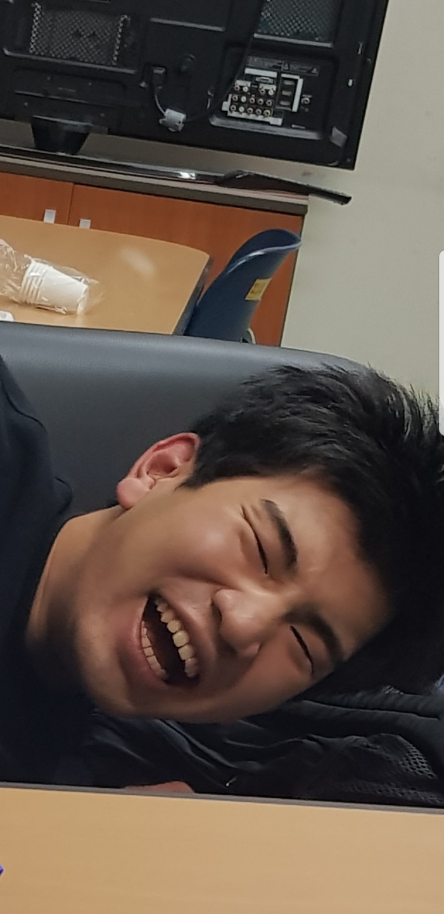
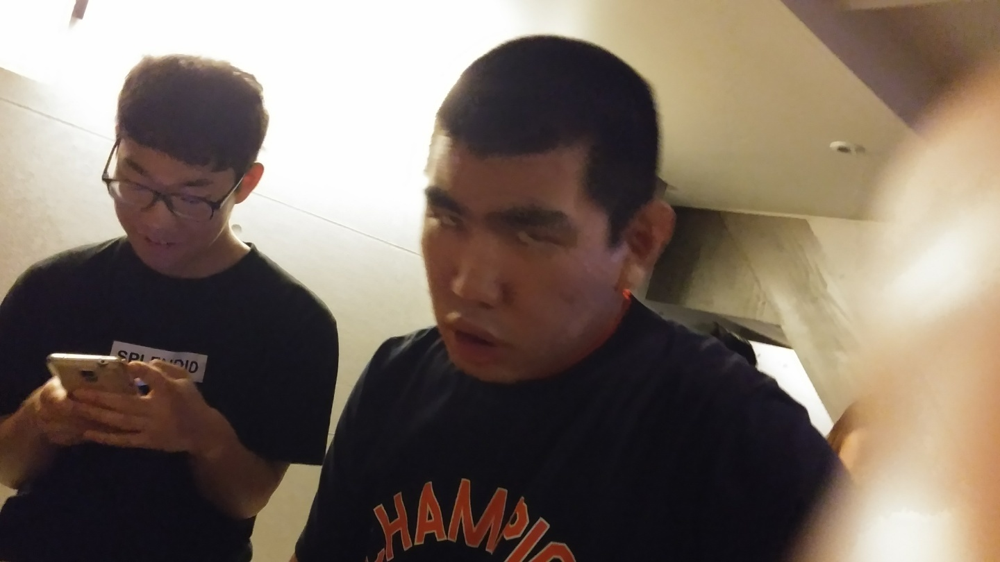
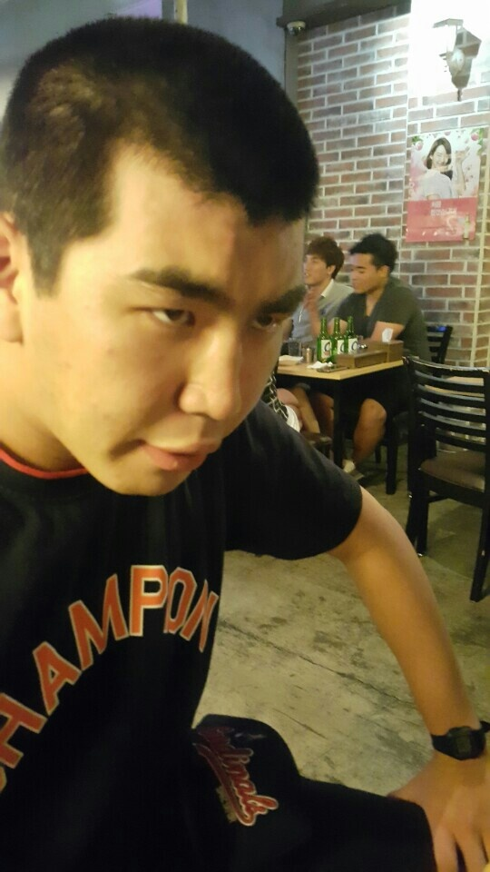
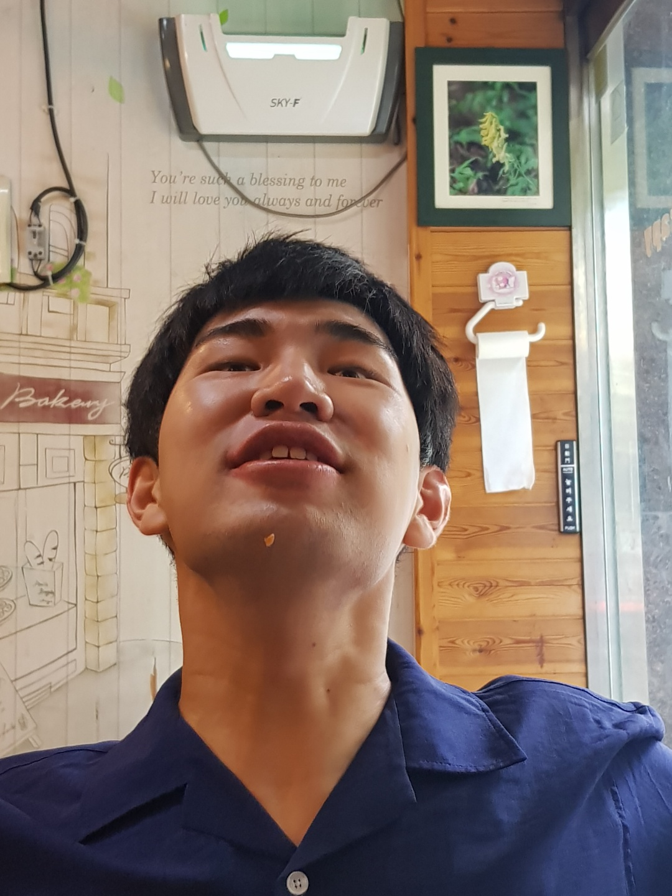
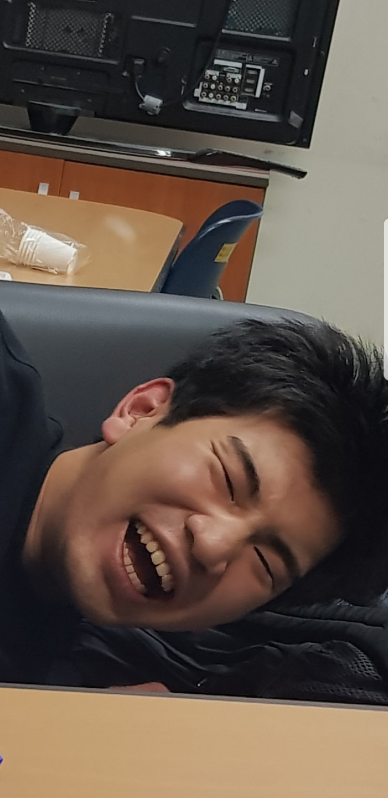
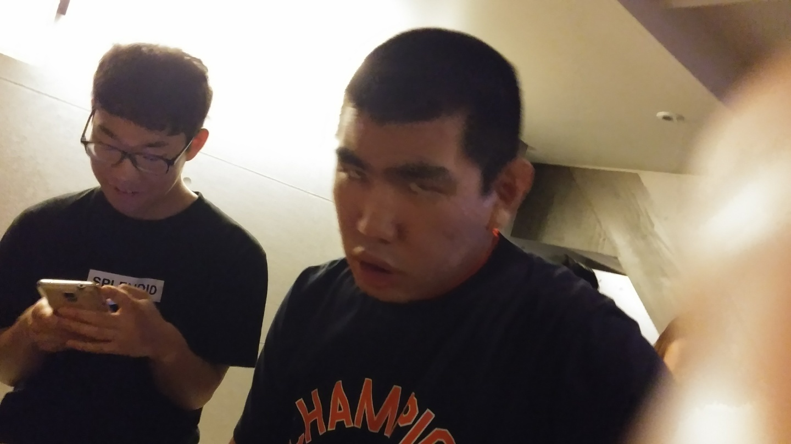
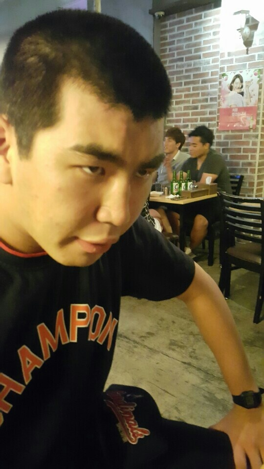
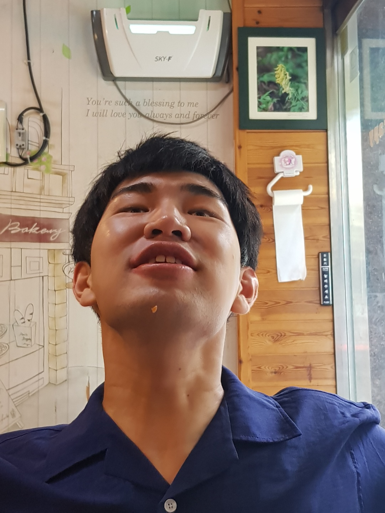

위 사진들을 보면 본 페이지의 관리자가 생각하는 박성혁 군의 흑역사라고 할 수 있다.
첫번째 사진은 유리안과 같이 놀러갔던 홍대 어느 술집으로 추정되어진다. 술집에서 갑자기 왜 저런 표정을 지었는지는 이해가 잘 되지 않는다.
두번째 사진은 노량진에서 공시 공부를 하던 시절 페이스톡을 하는 장면이다. 본인 말로는 1주일동안 씻지 않았다고 한다..이게..뭔.일이고..
세번째 사진은 월드디제이페스티벌 행사스텝을 하던 시절이다. 공부를 한다며 반삭을 했으나 시간이 흘러도 머리가 잘 자라지 않았다고 했었다.
네번째 사진은 아주대에 놀러와 국방디지털융합학과 과방에서 쇼파에 누워있던 장면을 찍었다. 아마 저날은 투기를 통해 수익을 봤던 날로 기억하고 있다. 얼굴에서 행복함이 묻어난다.
다섯번째 사진은 군대를 가기전 반삭을 하여 입대하기전 애들과 찍었던 사진 같다. 포스가 살벌하다.
여섯번째 사진도 이하 동문
일곱번째 사진은 여울목으로 추정되는 곳이다. 후에 준용이와도 같이 술을 마셨다. 위 사진과는 다르게 무척 귀여운 이미지를 가지고 있는것같다.
후에 추가가 안된다면 마지막일 사진이다. 얼마나 힘들었으면 턱밑에 밥풀떼기 까지 붙여서 먹고있다. 내년엔 꼭 대학오자 형님
WARNING! 이곳은 심해의 판도라의 상자입니다. 들어오시지 말것을 추천드립니다.